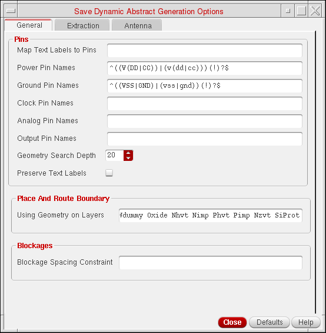

Specifying Advanced Dynamic Abstraction Rules
To specify the advanced abstraction rules in the layout window:
-
Choose Tools – Dynamic Abstract Generation For Pcells – Abstract Pcells.
The Abstract Pcells form is displayed as shown in the figure below.

-
Click Advanced Options.
The Save Dynamic Abstract Generation options form is displayed as shown in the following figure. The form has three tabs: General, Extraction, and Antenna.

Related Topics
Mark/Unmark Pcells for Abstraction Form
Specifying General Dynamic Abstraction Options
Specifying Extraction Options for Dynamic Abstraction
Specifying Antenna Options for Dynamic Abstraction
Return to top